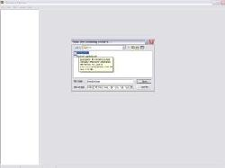
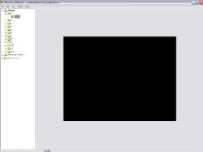
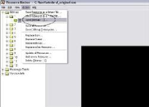
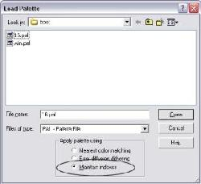
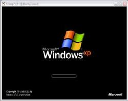
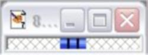
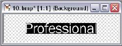
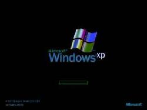

Изменение экрана загрузки Windows
ПРЕДУПРЕЖДЕНИЕ: мы не несем ответственности за все, что может случиться с вашим компьютером в результате этой процедуры. Делайте все на ваш собственный риск!
Процедура весьма схожа с изменением экрана загрузки Windows 2000 boot logo (полное руководство смотрите на Little White Dog). Microsoft решило перенести палитру изображений в другое место. Теперь, если вы откроете ntoskrnl.exe в Resource Hacker, bmp-файлы будут выглядеть просто черными. Те из вас, кто не понимает, что я имею в виду, не волнуйтесь.
Первый нужный нам инструмент – это Resource Hacker. Сначала найдите ваш ntoskrnl.exe, его можно найти в папке \windows\system32. Сделайте копию вашего ntoskrnl.exe и назовите ntoskrnl.bak. Теперь запустите Resource Hacker и открйте ntoskrnl.exe.

Слева вы увидите список ресурсов, которые можно править. Откройте первое дерево, называемое Bitmaps, и увидите номера 1-10. Номера 1, 8 и 10 и есть картинки WinXP Pro. 1, 7 и 9 – для Home Edition. В этом руководстве мы используем Pro. Выберите номер 1.

Затем в меню 'Action' кликните 'save Bitmap'.

Сохраните картинку, где пожелаете, только запомните где. Повторите процедуру для номеров 8 и 10. Теперь для редактирования этих изображений мы будем использовать Jasc Paint Shop Pro 7. Откройте все три изображения в Paintshop. Когда они откроются, они будут полностью черными. Чтобы увидеть действительное изображение, импортируем палитру. Используем палитру для Paint Shop Pro: 16.pal. Для Photoshop: 16.act. В Paintshop нажмите Shift+O и выберите файл 16.pal.

Удостоверьтесь, что вы выбрали 'Maintain Indexes'. Если вы откроете все три изображения сразу, вам понадобится добавить палитру к каждому из них. Теперь картинки должны быть видны.
Номер 1 должен выглядеть так:

8 – так:

И 10 – вот так:

После того, как вы измените картинки, сохраните их. Откройте Resource Hacker вновь, и откройте ntoskrnl.exe. Зайдите в 'Action/Replace Bitmap... '

Выберите файл на замену 1, затем кликните 'Open file with new Bitmap' и укажите ваш исправленный файл картинки. Затем кликните 'Replace'. Повторяйте эти шагис номерами 8 и 10. Когда с этим будет покончено, щелкните Save As и сохраните ваш новый ntoskrnl.exe в папке, отличной от системной system32 (таким образом вы не затрете оригинальный файл). Теперь из-за системы файловой защиты Windows вам придется перегрузиться в безопасном режиме (перегружаетесь, жмете F8 до того, как появится экран загрузки) или грузитесь с загрузочного DOS-диска (зайдите на www.bootdisk.com за образами флоппи-загрузчиков), чтобы переписать оригинальный ntoskrnl.exe. Когда вы все это проделаете, перегрузитесь и смотрите, что получилось.
Примечание: То же можно сделать с Adobe Photoshop и, я допускаю, с другими графическими редакторами. Однако я пробовал это только с Paint Shop Pro и Photoshop.
Barret и OpenFriday
Перевод статьи, взятой на thetechguide.com
Комментарии
Еще до того как эта статья попала мне в руки, я пробовал самостоятельно, методом проб и ошибок изменить экран загрузки. Но дальше извлечения картинок из файла у меня дело не доходило.
Итак, я скопировал из системной папки system32 файл ntoskrnl.exe и открыл его Restorator'ом (программа просмотра ресурсов), с его помощью извлек нужные картинки. Процедура извлечения ресурсов с помощью Restorator'а мало отличается от работы с Resource Hacker, поэтому подробно я описывать не буду. Как и сказано в статье, просмотр в графическом редакторе не сулит никаких радостей. Хотя, если открыть bmp-файл в Photoshop (описываю работу именно с этим редактором, так как Paint Shop Pro у меня нет), а потом открыть в меню Image>Mode>Color Table... и поиграть в открывшемся диалоге с палитрами, то можно лицезреть, например, такое (таблица цветов System(Windows)):
Сравните с картинкой повыше и, как говорится, почувствуйте разницу. Чтобы увидеть действительные цвета картинки, нужно загрузить специальную палитру 16.act. Делается это так: заходите в тот же диалог выбора палитры и жмете кнопку Load..., в диалоге открытия находите свой заранее скачанный файл палитры цветов. После этого вы получите картинку точь-в-точь как при загрузке вашей ОС. Теперь вы можете менять ее по своему желанию. На этом, должен сказать, мой опыт изменения экрана загрузки заканчивается, так как я не смог сделать заключительный шаг - сохранить картинку. После сохранения она в любом редакторе открывается во всей красе, не скрывая, как раньше, свои истинные цвета. Как только я справлюсь с данной проблемой, обязательно выложу рецепт.
Но кое-какой опыт изменения экранной заставки у меня все же имеется. Мне не удалось создать свой ntoskrnl.exe - не беда - в сети полно созданных другими людьми, в частности на ThemeXP.org. И вот в применении чужих файлов я достиг определенных успехов.
Главное: совсем не обязательно менять оригинальный ntoskrnl.exe на новый. Можно просто поместить в папку system32 другой файл, а потом внести изменения в файл boot.ini, который находится в корневой папке на C:\. Имя нового файла обязательно должно быть в формате 8.3 и набрано латиницей. После этого открываете файл boot.ini (он может быть скрыт) в текстовом редакторе (например, Блокноте) и добавляете в конец строки (у вас она может отличаться)
multi(0)disk(0)rdisk(0)partition(2)\WINDOWS="Microsoft Windows XP" /fastdetect
следующее:
/KERNEL=ntoskrno.exe
В приведенном примере мой "другой" файл называется ntoskrno.exe. Теперь вы по желанию простой редакцией файла boot.ini можете менять экран загрузки, к тому же никто не накладывает ограничений на их количество. Я стараюсь называть файлы близко к оригинальному (меняю последнюю букву), чтобы потом в ini-файле тоже менять лишь одну букву.
Очень важно: будьте внимательны, файлы для Windows XP и Windows XP SP1 отличаются. В случае неправильного выбора файла вас ожидает нежелание системы грузиться! Отличить файлы проще всего по размеру: файл для SP1 имеет размер ~2 МБ, для Windows XP чуть меньше. Можно также открыть контекстное меню файлов, щелкнув правой кнопкой, выбрать пункт Свойства, там перейти на вкладку Версия. В графе Версия файла для разных файлов содержится такая информация:5.1.2600.115 (xpclnt_qfe.021108-2107) и 5.1.2600.1224 (xpsp2.030516-0318). Самое важное я выделил красным цветом. Узнать, подходит ли вам файл, можно, так что, если сомневаетесь, лучше проверьте. Будьте внимательны, но и не бойтесь. Хуже, если вы, как один мой знакомый, не знаете какая ОС стоит на вашем компьютере. Когда он как-то позвонил мне и спросил, как это можно узнать, я сначала долго смеялся в трубку (звонил он, и за мой смех платил он же :), а потом объяснил. (Если и вы не знаете, то щелкните правой кнопкой мыши по значку Мой компьютер и в открывшемся контекстном меню выберите пункт Свойства, ответ находится на закладке Общие или Пуск > Настройка > Панель Управления > Система, закладка Общие.)
Для чистоты эксперимента обзавелся программой Paint Shop, работа с которой описывается в исходной статье. Вы знаете, особой разницы с Photoshop я не обнаружил, по крайней мере в результатах. Расскажу подробнее. Итак, при загрузке оригинальной картинки в графический редактор мы видим черный прямоугольник. После загрузки палитры рисунок виден во всей красе, но после сохранения столь же красивым он и предстает перед нами всякий раз, когда мы его открываем. В Photoshop эту проблему я не решил. Не помог даже подсказанный мне вариант: сохранить предварительно исходную палитру и загрузить ее после редактирования рисунка. Сначала я восторжествовал было, так как после загрузки исходной палитры правленый рисунок вновь стал выглядеть черным экраном, но оказалось, что если его вновь открыть, то он не идеально черный, а представленный оттенками серого, то есть изображение хоть и плохо, но просматривается. После этого я решил, что в этом вопросе Photoshop мне не друг (по крайней мере в этом вопросе) и решил отложить эксперименты до тех пор, пока в мои руки не попадет Paint Shop. Как уже сказано выше, программы очень похожи. Братья-близнецы, в крайнем случае двойняшки. Первая проблема, с которой я столкнулся - палитра. Щелкнув по ссылке я увидел страничку с таким содержанием:
JASC-PAL
0100
16
0 0 0
0 0 0
32 26 21
45 62 210
83 101 1
178 53 5
70 70 70
137 146 0
74 127 252
247 107 32
141 166 255
142 220 4
243 188 27
188 188 188
255 255 255
255 255 255
Долго не мог понять, что с этим набором букв и цифр делать, пока не додумался сохранить страницу, потом открыть ее в блокноте и убрать лишние теги. Если вы пройдете по ссылке и сделаете все так, как я сказал, то в Блокноте первоначально вы увидите следующее:
<!DOCTYPE HTML PUBLIC "-//W3C//DTD HTML 4.0 Transitional//EN">
<HTML><HEAD>
<META http-equiv=Content-Type content="text/html; charset=windows-1251">
<META content="MSHTML 6.00.2800.1106" name=GENERATOR></HEAD>
<BODY><PRE>JASC-PAL
0100
16
0 0 0
0 0 0
32 26 21
45 62 210
83 101 1
178 53 5
70 70 70
137 146 0
74 127 252
247 107 32
141 166 255
142 220 4
243 188 27
188 188 188
255 255 255
255 255 255
</PRE></BODY></HTML>
Сотрите лишнее (отмечено) и сохраните под именем 16.pal, предварительно в диалоге сохранения выбрав пункт Все файлы, иначе ваш файл сохранится как 16.pal.txt. После этого палитру можно загружать в Paint Shop. (Можно также сохранить файл с расширением psppalette). Все происходило в точности как в Photosop, в том числе и открытие отредактированного рисунка - все видно. Но здесь сохранение первоначальной палитры помогло, рисунок стал идеально черным после загрузки оригинальной палитры, таким же был он и после открытия в любом редакторе графики. После редактирования, загрузки оригинальной палитры (Она сохраняется так: пункт меню Image, затем Palette и Save Palette...) и сохранения настал черед Restorator'а. Перекрестившись (одно дело пользоваться чужими экранами загрузки, многократно проверенными, и совсем другое - делать свой), я заменил оригинальный 1.bmp на свой. После этого сохранил исправленный файл, поместил его в папку system32 и подредактировал boot.ini. Нажал кнопку Перезагрузка и, затаив дыхание, стал ждать. Все прошло успешно, теперь при загрузке я вижу не просто созданный кем-то красивый экран, а свой собственный. После этого я начал делать экраны загрузки один за другим и случайно обнаружил, что... с исходной палитрой можно было и не возиться! То есть отредактировал файл, сохранил - и вставляй его! Выходит, что можно было сделать все то же самое и в Photoshop. Но, если честно, проверять это на практике мне уже лень, да и незачем.
Успехов!
Существует более простой способ.
Создаём файл с картинкой 640x480 16-цветный под именем boot.bmp в папке WINDOWS и правим boot.ini в корневом каталоге диска: приводим к следующиму виду:
[boot loader]
timeout=30
default=multi(0)disk(0)rdisk(0)partition(1)\WINDOWS
[operating systems]
multi(0)disk(0)rdisk(0)partition(1)\WINDOWS="Microsoft Windows XP Professional RU" /noexecute=optin /fastdetect /noguiboot /bootlogo
Очень удобно так как не приходится править ядро (да и не каждый сумеет), плюс не зависит от текущей версии WINDOWS.
Обращаю внимание на выделенное - это обязательные действия.